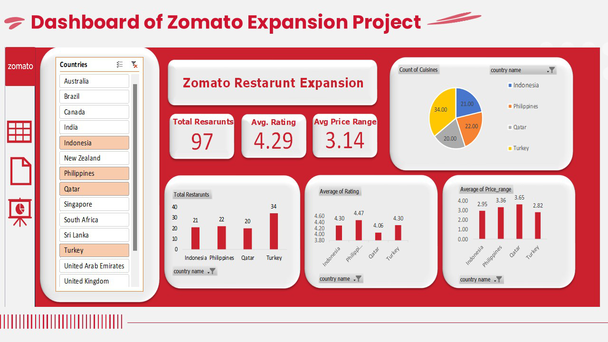

This project analyzes Zomato's restaurant data to identify optimal locations for new restaurant expansion,
assess competition, and understand the impact of various business factors such as price range, cuisine, and
service offerings across different countries and cities.
Objective
To develop a dashboard that answers key business questions for Zomato’s management, including market
saturation, restaurant performance by country and city, and recommendations for expansion into
under-served regions with strong growth potential.
Key Questions & Insights
- Total tables in data: 9551
- Total attributes: 20
- Categorical columns: 7 (Restaurant Name, Country Code, City, Locality, Cuisines, Rating,
Price_range)
- Data cleaning: Fixed date formatting and missing values; used VLOOKUP to map country codes to
country names.
- Restaurants per country: Created a table to show the number of restaurants in each country.
- Year-wise openings: Provided a breakdown of restaurant openings by year.
- High-end Indian restaurants: Counted restaurants in India with price range 4.
- Average voters per country: Calculated average number of voters for restaurants in each country.
- Conditional formatting: Highlighted rows for recommended cities/countries for new openings.
Expansion Recommendations
- Countries with low competition and high ratings: Philippines, Turkey, Indonesia, Qatar
- Suggested cities for new restaurants: Quezon City, Tagaytay City, Tangerang, Makati City
- Current quality (average rating): All suggested countries have average ratings above 4.0
- Current expenditure on food: Analyzed average cost for two in recommended countries to maintain
financial control.
- Biggest competitors in target cities:
- Balay Dako (Tagaytay City)
- Izakaya Kikifuji, Le Petit Souffle (Makati City)
- Onokabe, Talaga Sampireun (Tangerang)
- Silantro FilMex (Quezon City)
- Cuisines to focus on: Sunda, Indonesian, French, Japanese, Filipino, Mexican
- Does cuisine choice affect ratings? Yes, cuisine type impacts restaurant ratings.
- Online delivery and table booking: Online delivery does not impact ratings, but table booking can
improve customer satisfaction.
- Pricing strategy: Higher cuisine rates do not negatively affect feedback; rates and ratings are
correlated.
- Price range distribution: Visualized the distribution of restaurant price ranges across countries
using pivot charts.
Approach Overview
- Explored dataset structure and key columns (country, city, price range, ratings, votes).
- Used pivot tables/charts to analyze restaurant distribution and identify underrepresented markets.
- Calculated average ratings and costs per country/city to assess market potential.
- Applied conditional formatting to highlight service gaps and opportunities.
- Analyzed engagement via votes and service availability (delivery, table booking).
- Grouped and filtered cuisines to find those most in demand and best rated.
- Shortlisted countries/cities with low competition, high ratings, and favorable cost structures for
expansion.
